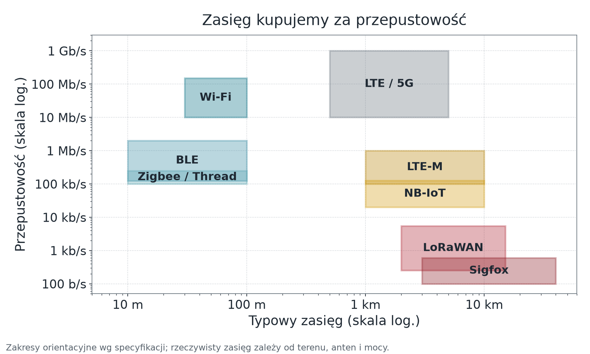
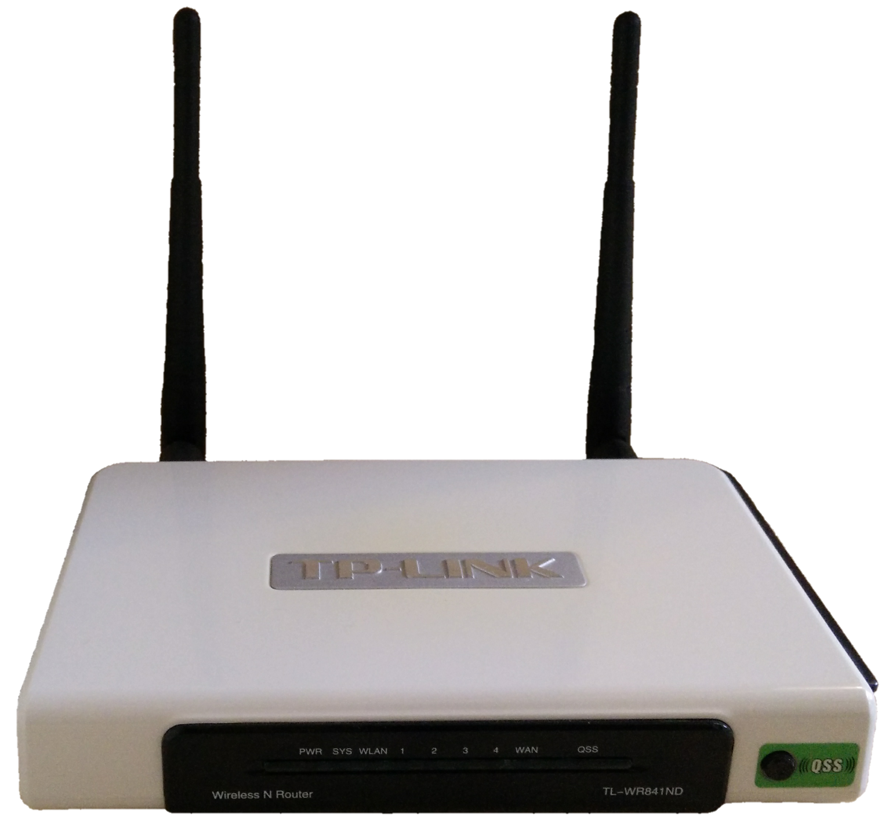
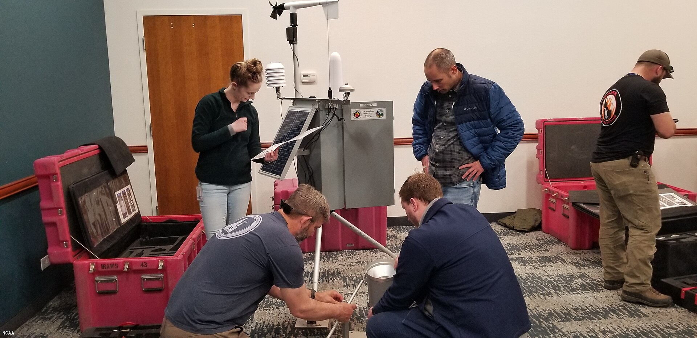
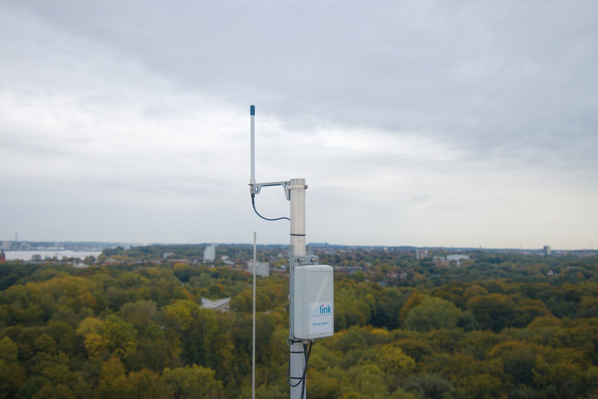

Wykład 3 — stabilne łącze i wymiana firmware bez unieruchomienia urządzenia
Wydział Inżynierii Środowiska i Inżynierii Mechanicznej
Uniwersytet Przyrodniczy w Poznaniu
Pytanie modułu: jak wybrać radio na podstawie liczb — i jak wymienić oprogramowanie w urządzeniu, do którego nie mamy dostępu fizycznego?
Fot. CEphoto, Uwe Aranas, CC BY-SA 3.0
Komunikacja maszyna–maszyna opiera się na kompromisach nieznanych w świecie komputerów osobistych.
Wybierasz dwa z trzech


Fot. Florian838, CC BY 4.0
Dlaczego to wybór naszego stanowiska
Urządzenie pilotażowe ma stałe zasilanie i wymaga sterowania zwrotnego z małym opóźnieniem. W tym układzie Wi-Fi 2,4 GHz jest wnioskiem, nie przyzwyczajeniem — ale procedurę doboru i tak wykonujemy jawnie.
Obie płytki stanowiska (ESP32-S3 i ESP32-C3) obsługują wyłącznie 2,4 GHz. Punkt dostępowy pracujący tylko w 5 GHz jest dla nich niewidoczny.
Sieć odtworzy trasę tylko wtedy, gdy istnieje alternatywny węzeł-router zasilany z sieci. Czujniki bateryjne są urządzeniami końcowymi i nie pośredniczą w ruchu — dodanie kolejnego czujnika nie zwiększa zasięgu.
Zigbee i Thread korzystają z tego samego radia IEEE 802.15.4; Thread przenosi IPv6. Standard Matter (Connectivity Standards Alliance, dawniej Zigbee Alliance) działa po IP: przez Wi-Fi, Thread i Ethernet — urządzenia Zigbee dołącza tylko przez mosty. Kratową siatkę ma też Bluetooth Mesh.
Low Power Wide Area Network — zasięg kupiony za przepustowość.

Zdalna automatyczna stacja pomiarowa — typowy węzeł bez gniazdka i bez Wi-Fi. Fot. NOAA, domena publiczna.

Brama Kerlink LoRaWAN w Kilonii. Fot. Fabian Horst, Wikimedia Commons, CC BY-SA 4.0. Pomniejszono.
Brama nie jest „mocniejszym czujnikiem”. Łączy dwa światy:
Model „sieć jako usługa”: operator dostarcza łączność, użytkownik nie buduje infrastruktury.
Spółka Sigfox została przejęta w 2022 r. przez UnaBiz; sieć działa jako Sigfox 0G, a francuska spółka operatora weszła w 2025 r. w sądową restrukturyzację. Przy doborze technologii na lata ryzyko operatora jest parametrem projektowym — tak samo jak zasięg.
To ten sam rodzaj ryzyka, który w module 06 zobaczymy przy platformach chmurowych. Pytanie brzmi zawsze tak samo: co robimy, gdy dostawca zamknie usługę?
Dopiero po zapisaniu tych czterech wartości wybór staje się wnioskiem, a nie preferencją.
Zastosowanie do naszego stanowiska
Kilkaset bajtów co kilkanaście sekund · jedno pomieszczenie, jedna ściana · zasilanie stałe · łączność zwrotna wymagana, opóźnienie poniżej kilku sekund → Wi-Fi 2,4 GHz.
Ten sam rachunek dla czujnika w polu, bez zasilania i bez sterowania, dałby LoRaWAN.
Fot. Raysonho, CC0
Brak sieci nie zwalnia z odpowiedzialności za wyjście. Aktuator przechodzi w stan bezpieczny zdefiniowany w module 02 — zanim zaczniemy ponawiać połączenie.
Pomiary wykonane bez łączności można zbuforować — pod trzema warunkami:
Pułapka znacznika czasu
Urządzenie bez zegara RTC i bez synchronizacji NTP nie zna czasu bezwzględnego po restarcie. Zbuforowany pomiar dostanie wtedy czas liczony od startu — bezużyteczny dla szeregu czasowego.
Rozwiązania: zegar RTC z podtrzymaniem, synchronizacja po odzyskaniu sieci i korekta znaczników w buforze, albo jawna decyzja, że zaległości odrzucamy.
Fot. Shixart1985, CC BY 2.0
Nowy obraz trafia do nieaktywnej partycji OTA, jest weryfikowany, a dopiero potem wybierany do uruchomienia. Przerwa zasilania podczas zapisu nie może naruszyć działającej partycji.
Aktualizacja w ESP-IDF nie nadpisuje działającej aplikacji. Wymaga:
ota_0, ota_1),otadata).Nowy obraz trafia do partycji nieużywanej w danym rozruchu. Dopiero po weryfikacji otadata wskazuje, z której partycji uruchomić system następnym razem.
Partycja otadata ma rozmiar dwóch sektorów flash (0x2000 B) i jest zapisywana podwójnie, żeby zanik zasilania w trakcie samego zapisu wskaźnika nie unieruchomił urządzenia.
| Mechanizm | Co robi | Konsekwencja dla projektu |
|---|---|---|
esp_ota_begin / esp_ota_write / esp_ota_end |
zapis nowego obrazu do wolnej partycji | w trakcie zapisu urządzenie nadal działa na starej wersji |
esp_ota_set_boot_partition |
wskazuje partycję do następnego rozruchu | zamiana wersji to jedna operacja, odwracalna |
CONFIG_BOOTLOADER_APP_ROLLBACK_ENABLE |
włącza tryb potwierdzania nowej wersji | nowa wersja startuje jako próbna |
esp_ota_mark_app_valid_cancel_rollback() |
oznacza wersję jako sprawną po self-teście | bez tego wywołania bootloader wróci do poprzedniej wersji |
esp_ota_mark_app_invalid_rollback_and_reboot() |
jawne wycofanie po nieudanej diagnostyce | urządzenie samo decyduje o cofnięciu |
CONFIG_BOOTLOADER_APP_ANTI_ROLLBACK |
blokada wersji o niższym numerze bezpieczeństwa (eFuse) | uniemożliwia atak „wgraj starą, dziurawą wersję” |
Kolejność jest odwrotna do intuicyjnej — i to jest sedno mechanizmu.
Pełne nazwy funkcji: esp_ota_mark_app_valid_cancel_rollback() oraz esp_ota_mark_app_invalid_rollback_and_reboot().
Kluczowa własność: brak zatwierdzenia jest równoważny odrzuceniu — ale dopiero przy następnym rozruchu. Zawieszona wersja nic sama nie wycofa: self-test potrzebuje limitu czasu, a watchdog musi wymuszać reset (w ESP-IDF Task WDT domyślnie tylko loguje). Wtedy bootloader wraca do poprzedniej wersji bez udziału człowieka i bez sieci.
Mechanizm jest mocny, ale obietnice trzeba formułować precyzyjnie.
Co gwarantuje
Czego nie gwarantuje
mark_app_valid powrót wymaga jawnej akcji: polecenia przełączenia partycji albo nowego wydania.Formułowanie obietnic: „system da się zaktualizować zdalnie” jest prawdą. „System zawsze wróci do działania po nieudanej aktualizacji” — tylko wtedy, gdy self-test wykrywa to, co ma wykryć.
W ThingsBoard pakiet firmware ma tytuł, wersję i sumę kontrolną (domyślnie SHA-256). Para tytuł + wersja jest unikalna w obrębie dzierżawcy — nie nadpisujemy istniejącej wersji.
Stan aktualizacji ma znaczenie dowodowe, bo część stanów ustawia platforma, a część raportuje samo urządzenie.
Dzięki temu wiemy, na którym etapie utknęła aktualizacja — a nie tylko, że się nie udała.
| Stan | Ustawia | Znaczenie |
|---|---|---|
QUEUED |
platforma | powiadomienie czeka na wysłanie |
INITIATED |
platforma | urządzenie powiadomione |
DOWNLOADING |
urządzenie | pobieranie rozpoczęte |
DOWNLOADED |
urządzenie | pobieranie zakończone |
VERIFIED |
urządzenie | suma kontrolna zgodna |
UPDATING |
urządzenie | aktualizacja stosowana |
UPDATED |
urządzenie | aktualizacja udana |
FAILED |
urządzenie | błąd pobierania, sumy lub zastosowania |
Domyślne parametry platformy
Domyślnie platforma wysyła 100 powiadomień na 60 s (TB_QUEUE_CORE_OTA_PACK_SIZE, TB_QUEUE_CORE_OTA_PACK_INTERVAL_MS).
\[t_{\text{wydania}} = \left\lceil \frac{n_{\text{urządzeń}}}{100} \right\rceil \cdot 60\ \text{s}\]
Wartości są konserwatywnym górnym ograniczeniem dla pełnych okien wysyłki. Dokumentacja podaje średnie tempo n / pack_size × interval; dla 240 urządzeń daje to 2,4 min, a licząc pełne paczki — najwyżej 3 min.
.bin; klucz podpisu przechowywany poza platformą i poza katalogiem roboczym CI.canary, dopiero potem przypisanie do profilu.FAILED, urządzenie zostaje na starej wersji; (b) poprawny obraz, który nie przechodzi self-testu (np. zły adres brokera) → automatyczne wycofanie.Kryterium zaliczenia
Bez ostatniego punktu — obu przypadków — ćwiczenie nie jest zaliczone. Mechanizm wycofania, którego nigdy nie wywołano, jest założeniem — nie zabezpieczeniem.
Co zostaje z tego modułu
Moduł 04 — MQTT i kontrakt danych
Łącze stoi i firmware da się wymienić. Teraz zdefiniujemy, co dokładnie przez to łącze płynie: hierarchię tematów, poziomy jakości usługi i samoopisujący się ładunek, którego zmiana nie wywróci wszystkich odbiorców naraz.
Internet Rzeczy · Wykład 3 — Łączność sieciowa i OTA